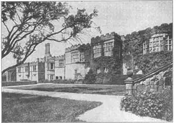
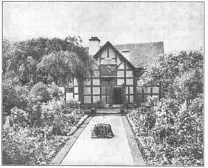

80
THE HOMES OF ENGLAND
英国式住宅

HAVE you ever been locked up? I knew a boy who was locked up by mistake. He hadn’t done anything bad, and he wasn’t locked up in jail.
What the boy had done was to go to a big museum to see the paintings. He walked and walked through gallery after gallery, until his feet hurt and he felt very weary. When he saw a comfortable sofa in one of the rooms he sat down to rest. The sofa was so comfortable that the boy fell fast asleep.
When he woke up, everything was dark. Of course, he was a little frightened. Who wouldn’t be! Great stone statues of Egyptian kings loomed black all around him. He hurried to the door. The door was locked!
He called and yelled and pounded on the door, but the museum had been closed for the night and no one heard him. There was nothing for the poor boy to do but stay there all night. When the doors were unlocked the next morning, you can imagine how surprised the guards were to find a very scared and very hungry boy waiting to get out.
A museum isn’t a comfortable place to live in, even for one night. The boy who got locked up found that out. And almost all the buildings you have read about in this book would make very poor homes. Who would want to live in the Parthenon, or St. Sophia, or the Leaning Tower of Pisa, or Rheims Cathedral? Even the castles and palaces of the Renaissance would be inconvenient for homes without a great number of servants to keep them in order.
Yet from the very earliest times people have had houses to live in Why haven’t these houses been more important in the story of architecture?
One reason is that the houses people live in are not generally built to last as long as a great temple or cathedral. The houses were often built of wood which gradually decayed. Houses wear out just as shoes or ships or shirts do. Old houses are torn down to make room for new ones. Many burn down. So a dwelling as old as a Greek temple would be very hard to find.
Houses that people live in, however, are often more truly interesting than the great celebrated buildings, For instance, I like the everyday houses of England more than I like the big, handsome, famous public buildings built since the English Gothic cathedrals. I believe you may like them more, too. I’ll tell you about them.
Gothic architecture in England had been slowly changing, until the later Gothic buildings were quite different from the early Gothic buildings. By the time Queen Elizabeth began to rule, English Gothic architecture had changed so much that it could hardly be called Gothic any more, so it was given a special name. The English rulers at this time belonged to the Tudor family and the architecture was called Tudor. Tudor architecture was in between Gothic and Renaissance architecture. It came after the true Gothic had died out and before the true Renaissance architecture had come to England. Tudor architecture is the most English of all English architecture.
Manor houses took the place of the medieval castles. Several of the old manor houses of this Tudor period are still standing. They have big bay windows that stick out from the walls, sometimes three stories high. The Tudor windows often had flat tops instead of pointed arch tops like the Gothic, but most of them still had stone tracery in them like the Gothic.
The windows were not arranged in even rows like the windows of the Riccardi Palace in Italy. Wherever a room needed a window, there a window would be put. The chimneys too were put wherever a fireplace was needed, and not just so they would look well from the outside. Often the chimneys were round like columns, instead of being square, and some were twisted like corkscrews.

No.80-1 HADDON HALL, A TUDOR HOUSE（都铎式住宅哈顿公馆）
The Tudor houses were honest architecture. They were built for comfortable and useful homes, not for show with all the beauty on the outside. That is one thing that makes them so pleasant and homelike to look at. They were built of whatever materials could be found in the neighborhood, sometimes stone, sometimes brick, sometimes partly wood and plaster. They seem to fit into the landscape as if they had grown there.
Now here’s a paragraph you’ll probably have to read twice because there are so many insides and outsides to it. As the Tudor houses were built for homes, the inside was considered more important than the outside. The outside was not put on like Italian Renaissance outsides, to make a pretty picture. The outside was really just the outside of the inside. But the Renaissance buildings were built for the outside effect. The Renaissance inside was just the inside of the outside. That is really a big difference when you think of it. Does all that mix you up? Then read it once more and probably you can get straightened out.
Indoors on the first floor of a Tudor manor house was the great hall. On the second floor there was often a long gallery or hall running the length of the building. This long gallery connected the rooms of the second story and was, besides, often used as a place to hang the family portraits.

No.80-2 SHAKSPERE HOUSE, STRATFORD-ON-AVON（埃文河畔斯特拉特福莎士比亚故居）
Besides the manor houses, there are many smaller houses of this period still left in England. These often have the first story built of brick and stone and the higher stories of oak timbers as a framework with the spaces between the timbers filled in with brick and plaster. The dark timbers against the white plaster make a very striking effect. One little girl always calls them zebra houses on account of the stripes, but their proper name is half-timbered houses.
Many of the jolly-looking little old inns and taverns of England are in half-timbered style. Here the stage coaches used to stop and travelers would find the inns cozy and warm after a long day’s journey. Some of these old inns have queer names like the Fighting Cocks, or the Fox and the Hounds, the Six Bells, the Dolphin, the Feathers or the Eagle and Child.
Two small half-timbered houses have become so famous that you must have seen pictures of them. They are famous as homes. One was the home of the Shakspere family and in it William Shakspere was born. The other was the home of Anne Hathaway, the woman whom Shakspere married. Here is a picture of the birthplace of Shakspere in Stratford-on-Avon.
Honest, picturesque, comfortable—don’t you like these homes of England?
【中文阅读】
你有没有被锁在屋子里的经历呢？我认识一个男孩，他不小心被人家锁在屋子里了。他并不是做了什么坏事，所以就不是被锁在监牢里。
这男孩只是到博物馆看了一次油画展而已。他一间画廊一间画廊地看，直到双脚发痛，全身乏力。他看到一间屋子有副舒适的沙发，便进去坐下休息。可沙发太舒适，他很快就躺下睡着了。
当他醒来时，四下里已是黑乎乎的一片。他当然有点害怕。谁会不怕呢？黑黢黢的埃及国王巨石像阴森森地立在四周！他冲到门口，可门已经锁了！
他大喊大叫，拼命捶门，可博物馆已经下班关门，没人听得到。可怜的男孩万般无奈，只得在里面过夜。第二天早上当门卫把门打开，发现一个又惊又饿的男孩等着出门，那惊讶程度你可以想象得到。
在博物馆里过夜可不舒服，哪怕只待一个晚上。这个被关的男孩深有感受。我们在这本书上所看到的房子中，可能都不适合住宿。谁会愿意住在罗马万神殿、圣索菲亚大教堂、比萨斜塔或兰斯大教堂里呢？即便是文艺复兴时期的城堡或宫殿，如果没有一大批仆人打理，住着也是很不方便的。
其实很久以前人们就享用住宅了。可为什么这些住宅在建筑史上却没有那么重要的地位呢？
一方面是因为普通人居住的房屋通常没有神庙或大教堂那么坚固持久。住宅大部分是以木头为材料，时间长了就腐烂了。房子和鞋子、船只、衬衫一样是会损坏的。人们拆除老屋，就地盖新房。还有许多被烧毁了。所以要想找到和希腊神庙一样古老的房屋是非常困难的。
但是人们居住的房屋，实际上比纪念性的大建筑物要有趣得多。譬如，相对于自英国哥特式大教堂以来建造的那些高大、漂亮和著名的公共建筑物而言，我更喜欢普 通的英国式住宅。我相信你也会更喜欢它们。下面我来介绍吧。
英国的哥特式建筑风格一直在慢慢地发生着变化，直到后期哥特式建筑出现了与早期哥特式建筑相当大的不同。在伊丽莎白女王开始执政时，英国的哥特式建筑已变得面目全非，几乎不能再称作哥特式了，所以就给它赋予了一个特别的名字。这时候的英国统治者都出于都铎家族，所以就把这时期的建筑称作都铎式建筑。都铎式建筑介于哥特式与文艺复兴式之间。它出现在真正的哥特式建筑消失之后，而真正的文艺复兴式建筑还没有来到英国之前的这段时间。都铎式建筑是最具英式风格的建筑。
庄园式住宅代替了中世纪的城堡。一些在都铎王朝时期建造的老庄园至今依然可以见到。墙壁上那凸出的大窗，有时候有三层楼那么高。都铎式窗顶常常是平形的，而不像哥特式窗顶呈尖拱形。但它们的窗格花饰大多采用石制，这跟哥特式还是很相像的。
但窗户的排列却不像意大利里卡尔迪宫那样呈平衡均匀状，而是哪里需要，就在哪里安窗。连烟囱也是这样，壁炉在哪，烟囱就建在哪。要不是这样，外观就会更漂亮啦。烟囱常常像柱子一样呈圆形，而不是方形，但也有被造成螺旋式的。
都铎式住宅毫不花哨，却舒适而实用，不只图外表好看。这就是为什么它们看起来让人觉得舒服，有家一样感觉的原因。只要是在邻近能找到的材料，都可以用来盖房子，像石头、砖块等，有时还掺杂木头和石灰。它们与地貌景观融为一体，就像是从那儿长出来的一样。
这里有一张图片，也许你该多看几眼，因为它设置了多种“内部”和“外部”。由于都铎式房屋基本上是住宅，所以一般认为内部比外部更重要。它的外观可不像意大利文艺复兴式建筑的外观那么花哨，吸人眼球。外部就是外部，是因内部而存在。而文艺复兴式建筑却追求外观效应，重外轻内。如果仔细思考这一点的话，就会发现这确实是很大的不同。这是不是把你给弄混了？或许再看一眼，可能就明白了。
都铎王朝时期庄园式住宅的室内，第一层是壮观的大厅。第二层通常是长型画廊或是横贯整层的大厅。第二层的长廊将所有的房间都连接在一起，而且家庭肖像也常常悬挂在长廊上。
除了庄园式住宅外，英国还遗留着许多规模稍小一些的都铎式住宅。它们的底层一般用砖石作材料，上层是用橡木做支架，里面塞满木头或石灰。黑木支架衬托着白石灰墙，产生了强烈的视觉效果。有个女孩因墙上的条文叫它“斑马房”，但实际上它应该叫“半木式房”。
英国许多让人赏心悦目的旧时小旅馆和小酒店就是半木式结构。小旅馆门口常会有公共马车停留，旅行者经过一天的奔波，会发现这里温馨舒适。这些古老的小旅馆有些名字起得非常古怪，像斗鸡、狐狸和猎狗、六铃铛、海豚、羽毛，还有老鹰与小孩等。
有两座半木式住宅远近闻名，想必你一定看过它们的图片。它们是因名人故居而出名。一座是莎士比亚故居，莎士比亚在这里出生。另一座是莎士比亚妻子安妮·海瑟薇的故居。请看莎士比亚的出生地——埃文河畔斯特拉特福莎士比亚故居的图片。
这些英国式住宅——简洁大方、如诗如画、舒适宜人，难道你不喜欢吗？